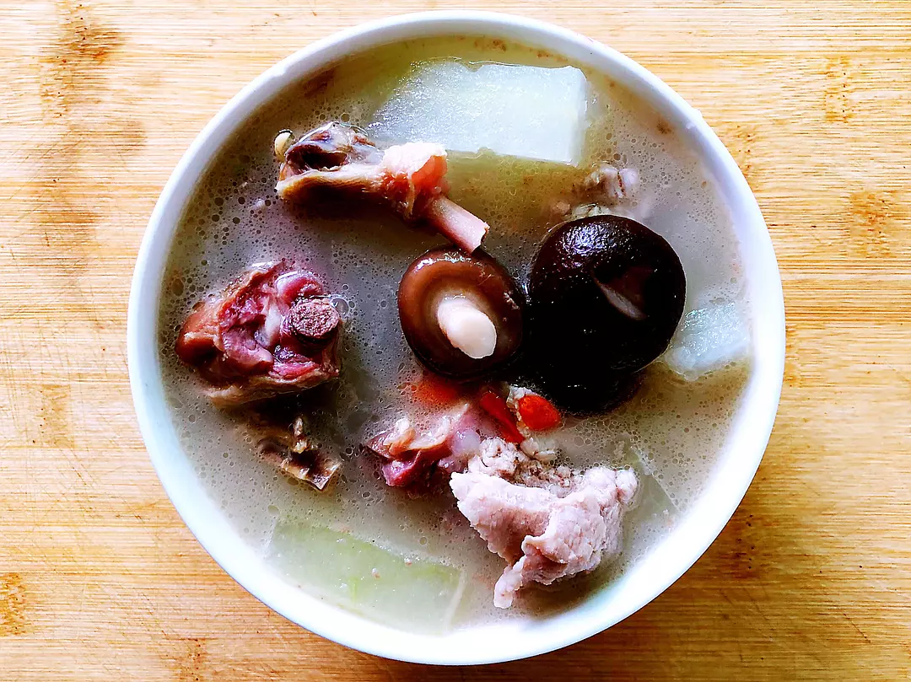
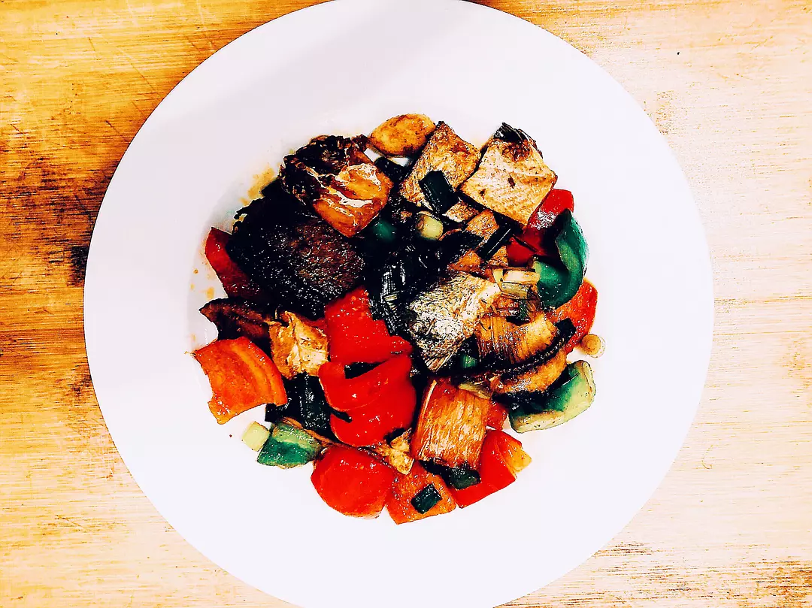
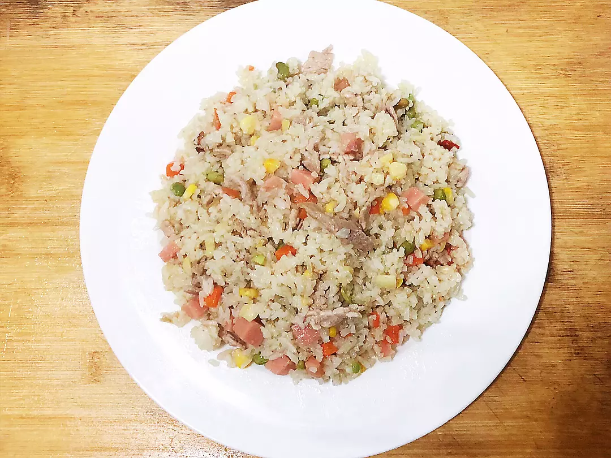

-
人物摄影的构图
发布日期：2018-09-05，作者：林倾
-
人物摄影的比例
发布日期：2018-08-20，作者：朵朵
-
借一道逆光
发布日期：2018-08-12，作者：林倾
-
自然的姿势
发布日期：2018-05-15，作者：林倾
-
构图的重要性
发布日期：2018-05-10，作者：常在
- B612咔叽
- 美图秀秀
- 天天P图
- picsart美易
- 最美证件照
- 轻颜相机
——无更多资源——
第01张图的赏析：
第02张图的赏析：
第03张图的赏析：
第04张图的赏析：
第05张图的赏析：
第06张图的赏析：
第07张图的赏析：
第08张图的赏析：
第09张图的赏析：
第10张图的赏析：
第11张图的赏析：
第12张图的赏析：
第12张图的赏析：
第14张图的赏析：
第14张图的赏析：
第16张图的赏析：
第17张图的赏析：
第18张图的赏析：
第19张图的赏析：

第20张图的赏析：
第21张图的赏析：

第21张图的赏析：

——无更多资源——
林倾 发表于 15分钟前
朵朵 发表于 1小时前
朵朵 发表于 1小时前
朵朵 发表于 1小时前
林倾 发表于 2小时前

常在 发表于 6小时前
常在 发表于 6小时前
常在 发表于 6小时前
林倾 发表于 1天前
林倾 发表于 1天前
林倾 发表于 1天前
——无更多资源——